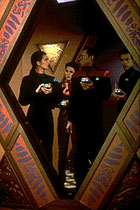
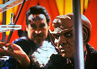

MANCHETE
DO EPISDIO
Premissa infantil e
pouco frtil marca
a pior produo da primeira temporada
Episdio
anterior | Prximo
episdio
Sinopse:
Data Estelar:
desconhecida.

Um
grupo de aliengenas chega do quadrante Gama e faz uma visita a Deep
Space Nine. Fascinados por jogos, eles gastam todo o seu
tempo no bar do Quark.
Aps descobrirem que esto sendo sabotados na mesa da Dabo, os
aliengenas desafiam Quark para disputar um jogo de seu planeta.
Inadvertidamente, Sisko, Kira, Dax e Bashir so colocados, tal
qual peas em um tabuleiro, para disputar a partida.
Quark agora precisa vencer o jogo para trazer suas peas de volta
para casa.
Comentrios:
Em uma trama absurda e conveniente, empacotada com uma
irritante mensagem do tipo "no trapaceie nos jogos",
chegamos ao ponto mais baixo da temporada.
Favor evitar - ver Sisko, Kira, Dax e Bashir "pulando
amarelinha" no bom para os fracos de corao.
Pssimas interpretaes abundam (especialmente de Fadil,
Shimerman, Lashly e do convidado Joel Brooks), Nana Visitor est
totalmente fora do personagem (o que extremamente raro), bem
como intragveis motivos surreais e bizarros espalhados ao longo
do episdio.

O
segmento at poderia oferecer mais, ainda com o uso da premissa
do jogo em si, desde que o jogo forasse cada um dos quatro
oficiais seniores a lidar com algum tipo de conflito interno. Ou
seja, algo como se os quatro estivessem jogando e a partir de um
certo momento cada um se visse imerso em algum tipo de cenrio
virtual relacionado a algo marcante e ntimo de seu passado.
A premissa em si continuaria absurda, claro, mas os dividendos
advindos do estudo dos personagens em tais situaes geralmente
nos fariam esquecer tal coisa.
Citaes:
Falow -
"Move along home!"
(Vo para casa!)
Trivia:
 Episdio contou com a participao do Tenente Primmin.
Episdio contou com a participao do Tenente Primmin.
Este episdio foi originalmente
chamado de "Sore Losers".
imaginao minha ou os
crditos de roteiro e histria esto invertidos?
Ficha
tcnica:
Histria de Michael Piller
Roteiro de Frederick Rappaport e Lisa Rich
& Jeanne Carrigan-Fauci
Direo de David Carson
Exibido em 15/03/1993
Produo: 010
Elenco:
Avery Brooks como
Benjamin Lafayette Sisko
Ren Auberjonois como Odo
Nana Visitor como Kira Nerys
Colm Meaney como Miles Edward O'Brien
Siddig El Fadil como Julian Subatoi Bashir
Armin Shimerman como Quark
Terry Farrell como Jadzia Dax
Cirroc Lofton como Jake Sisko
Elenco convidado:
Joel Brooks como Falow
James Lashly como tenente George Primmin
Clara Bryant como Chandra